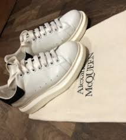
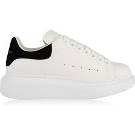
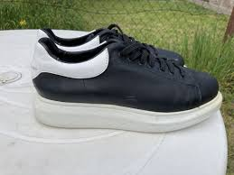
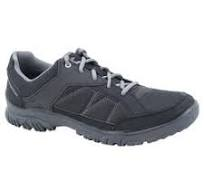
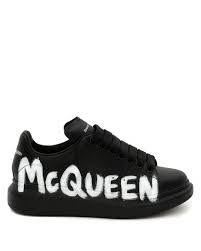
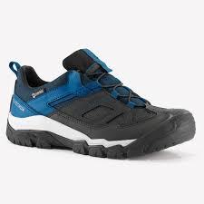

Alexander McQueen Története
Alexander McQueen egy brit divattervező volt, akinek neve világszerte ismertté vált a luxus divatiparban. A McQueen márka cipőinek története szorosan összefonódik a tervező karrierjével és innovatív, sokszor provokatív stílusával.
Alexander McQueen, teljes nevén Lee Alexander McQueen, 1969-ben született Londonban. Divattervezői karrierje a Central Saint Martins College of Art and Design-on kezdődött, ahol diplomamunkája azonnal felkeltette a figyelmet. Miután Vivienne Westwoodnál és Givenchy-nél is dolgozott, saját márkáját 1992-ben alapította.
Mohácson a hagyomány eredetét a törökűzés legendájával is magyarázzák. A mondának – mely szerint a Mohács-szigeti mocsárvilágba menekült őslakos sokácok megelégelve a rabigát, ijesztő álarcokba öltözve, maguk készítette zajkeltő eszközökkel, az éj leple alatt csónakokkal átkelve a Dunán, kizavarták a törököket Mohácsról – aligha van történeti alapja. A város 1687-ben szabadult fel a török uralom alól, s a sokácság nagy arányú betelepítése csak mintegy tíz évvel ezután kezdődött meg. Minden bizonnyal a balkáni eredetű sokácok korábbi hazájukból hozták magukkal a szokást, mely aztán Mohácson formálódott tovább és nyerte el mai alakját. A népszokás megjelenéséről a XVIII. század végéről vannak az első adatok.
McQueen cipői nem csak a divatbemutatókon, hanem a vörös szőnyegen és a popkultúrában is népszerűek. Számos híresség, köztük Lady Gaga, gyakran választotta McQueen extrém lábbelijeit, hogy kifejezzék egyedi stílusukat.
Ma a McQueen márka továbbra is új utakat keres a fenntartható divat terén. A cipőik nem csak esztétikai szempontból, hanem etikai és környezeti szempontból is próbálnak megfelelni a modern elvárásoknak.
Összefoglalva, Alexander McQueen cipői a divatvilág ikonikus darabjai, amelyek a tervező művészi zsenialitását és innovatív szemléletét tükrözik. Mára a McQueen cipők a luxus, a kreativitás és a modernitás szimbólumai lettek, öröksége pedig továbbra is inspirálja a divatrajongókat világszerte.
Több érdekesség a márkáról
Itt egy összehasonlitó hogy mennyire jó minőségű cipő más cipőhöz képest itt is lenne egy pár példa
| Alexander McQueen | Quechua | Adidas |
|---|---|---|
|  |  |
|
|  |  |  |
|  |  |
látható a képekről is hogy megjelenésileg meg minden dologban a legjobb az Alexander McQueen